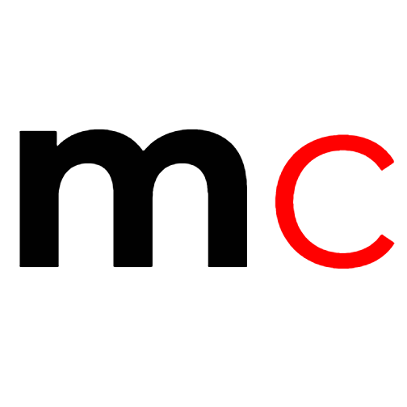
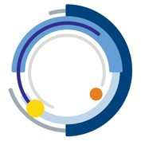

Jesse Zhong
St. Mark's School of Texas '18
Columbia University '22

St. Mark's School of Texas '18
Columbia University '22
Hi! I'm Jesse, and I'm current freshman at Columbia University pursuing a double major in Mathematics and Computer Science. My main interests academically
lie in applications in computer science to urban fields with real-world, positive social impact, such as computational spatial design or analysis of
dyanmic urban education planning. However, I always enjoy learning new things across all STEM fields, such as genetic sequencing and splicing in biology,
kinetics of reactions in chemistry, or even anlyzing equipotential surfaces in physics. I always enjoy my daily dose of exploring new topics through YouTube
channels such as Numberphile or Vsauce (I highly recommend these creators to anyone interested in acquiring knowledge across a breadth of various scientific
ideas and theories).
Outside of class, I enjoy many things which are physically extensive, which includes weekly pickup basketball games with friends and working out (I'm stil
trying to find the sweet spot when no one else is at Dodge). I'm a member of Uptown Local, Columbia's men's ultimate frisbee team, and I definitely enjoy
getting a breather from schoolwork a couple times a week to launch up and grab the disc in the end zone. I'm also a developer at SpecTech of The Spectator,
Columbia's weekly newspaper, and I work on anything from creating web pages for special events, such as Freshman Orientation, to Chrome extensions, such
as Vergil+ and The Shaft, which enhance Columbia students' processes in course registration and dorm selection, respectively. Finally, I've always loved
teaching, and I'm currently an instructor at Idea Math in NYC and a grader for AoPS, but I've worked for many places, including Mathnasium and Awesome
Math as well as my own tutoring initiatives. In my free time, I absolutely love coming up with unique math contest problems.
Check out the Awards section for academic/extracurricular awards and honors I've earned, the Activities section for projects, initiatives, and
activities I'm invovled with at Columbia and beyond, and the Memories section for a cool gallery!
mathcycle

GitHub
a personal full-stack project that allows users to acquire new mathematical techniques and skills through a practice module, which contains
numerous problems of increasing difficulty across algebra, geometry, combinatorics, and number theory. GitHUb
Cardrop
GitHub
a full-stack web app created by my team and me at Yhack 2018 that paradigms an automated car rental system with features such as remote locking and
unlocking, instant access, zone location returns, and GPS location access. We won the Best Use of Wix API Award, out of over 800 participants,
utilizing their API to create custom site components and backend algorithms for improved UX
The Data Open

GitHub
a data analysis project that my team and I complelted at Citadel's East Coast Datathon of The Data Open in which we analyzed the market potentials
of renewable energy sources in the United States. We incorporated various datasets, including information on consumption, production, education, and
plant density to draw conclusions on the viability of renewable power.
Use front-end and back-end technologies such as HTML/CSS/JavaScript, React, and Node.js to develop our website and launch web apps, including special events pages, such as the NSOP guide, and Vergil+, which improves the course selection process for Columbia students
Coded my own full-stack website that implements many interactive features that allows users to create an account and utilize the practice tool in Algebra, Geometry, Combinatorics, and Number Theory, which consists of original problems of increasing difficulty. Includes various resources such as contest, programs, and website information, as well as a review module to go over past solved problems.
Work on the machine learning of clouds, using SPCAM Earth data on heat flux, solar radiation, humidity, etc. and coarse graining to generate predictive models of global temperature increase and climate change. I am reparameterizing and improving dropout algorithms in training NNCAM, the lab's current deep neural network. We are trying to improve robust fitting through stochastic methods and possibly a GAN in order to hopefully influence lawmakers involved in the Paris Agreement as well as serve as a model for various weather forecasting institutions across the globe.
Curiosity: I spend a lot of time pondering things in both the microscopic and macroscopic worlds.
Why is that pidgeon unafraid of anything? Why is the one-over-r-squared relationship so powerful? Did Fermat really prove his famous last theorem in an
elegant way?
Limit-Pushing: No, I don't really enjoy taking a class that I wouldn't benefit or learn much from.
I enjoy learning for the process, struggling, tinkering, and challenging-myself to build up my knowledge. I don't take the easy way out: I push through
the finish line no matter how tired I am. No pain no gain.
Responsibility and Accountability: As a member of numerous 'teams,' including my family, friend
group, and basketball team, I have a responsibility and duty to those around me so that we can be the best that we can be. Everything I do will have
an effect on those around me. Give it your 110%, everyday.
Gratitude: The world around us isn't there from a wave of a wand. Our ancestors, past scientists,
and activists have dedicated their lives to their betterment of the society so that we can be in the world that we are today. I wouldn't be anywhere without
my parents, who've given their all to send me to basketball camps, math classes, and school on a daily basis. I couldn't imagine myself being in their shoes,
immigrating from China to a foreign land with little money, english skills, and help in order to support their families back home.
Passion: When I solve solve math problems, I aboslutely love it. When I teach students number sense tricks,
I am exhilerated. When I am coding for The Spectator, I put every bit of energy into it. I truly believe in purusing what you love with burning passion,
chasing after whatever it is because I genuinely love it, rather than for any other obstensible reason.
Open-Mindedness It's so easy to get trapped within a narrow field of view in tackling a challenging math
problem or discussing abortion rights. But I always remind myself to open my other ear, listen to what others have to say. We grow and evolve as a society
by building off each other in open conversation. Maybe I am wrong...
Team-Oriented: Being a bench warmer on a basketball team can undoubtedly be demotivating; I can
definitely attest to that from personal experience. But look beyond yourself, not everything has to run through you. I try to be as supportive as I can
be as a teammate and contribute in any way I can, which includes practicing hard and being the first one to jump off of the bench to get water for the
starters and high-five them with authority. Not everything's about me...
Initiative-Driven: I've grown to understand that nothing's going to get handed to you for free. If I
want to make a website for math education, it's not going to make itself. If I want to actualize change in math education across our nation, I need to be
the one who seeks out opportunities to teach and share ideas. If I want to do research in machine learning, I need to be the one who takes the time outside
of class to learn concepts from the ground up and then contact professors.
Health and Balance: Especially as a student at a university with a heavy coursework, it's important for
me to be able to maintain a balance of work/stress with relaxation and exercise. Keeping healthy and fit has always been a goal of mine, and I strive to not
give into perpetual stress by overworking myself. There are other things in life than classes. People, food, basketball... Moreover, I do enjoy maintaining a
healthy diet, avoiding junk food if I can in order to keep my body at the best it can be.